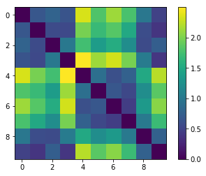

Gregor Long Music Analytics Project
Similarity Comparisons Using music21
Using a selection of demo tracks provided and then by entering my own trancscriptions, the following page shows a similarity matrix and heat map comparing the genre of tracks, followed by a comparison of transcriptions from two different data types.
Similarity Matrix
These images are collated from the raw featres the tracks found in The Similarity Matrx folder which includes 3 of my tracks as raw csv. files and demo tracks./p> 
Similarity Comparison between Notated and Acoustic Musical Data
The two transcriptions below are from my Lavender Town track, one from MuseScore and the other which was trancribed from MuseScore into SonicVisualizer and back again.

Notated Vs. Acoustic Transcription Comparison
Comparing this to the two trancriptions of the composition above, it is apparent that:
- The Sonic Visualizer transcription removes the ottava present in the original file; instead placing the notes higher on the staffs in order to replicate the higher pitch sound from the original.
- While the original composition has no distinct Key signature, the Sonic Visualizer transcription has added G Major Key signatures to each measure of the track.
- The Sonic Visualizer transcription has added in multiple rest notes, which were not present in original composition.
- The Sonic Visualizer transcription includes multiple connecting ties between notes.
When played back however, these differences are negligible to the human ear as the composition remains acoustically the same.
Therefore, I can confidently say that the Sonic Visualiser transcribed the track with a high degree of accuracy; if sacrificing the notational structure.